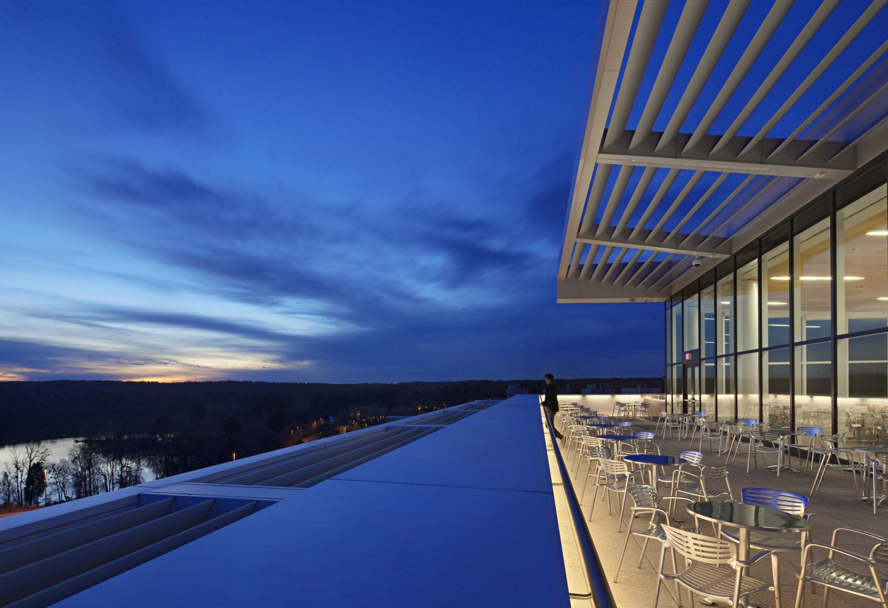
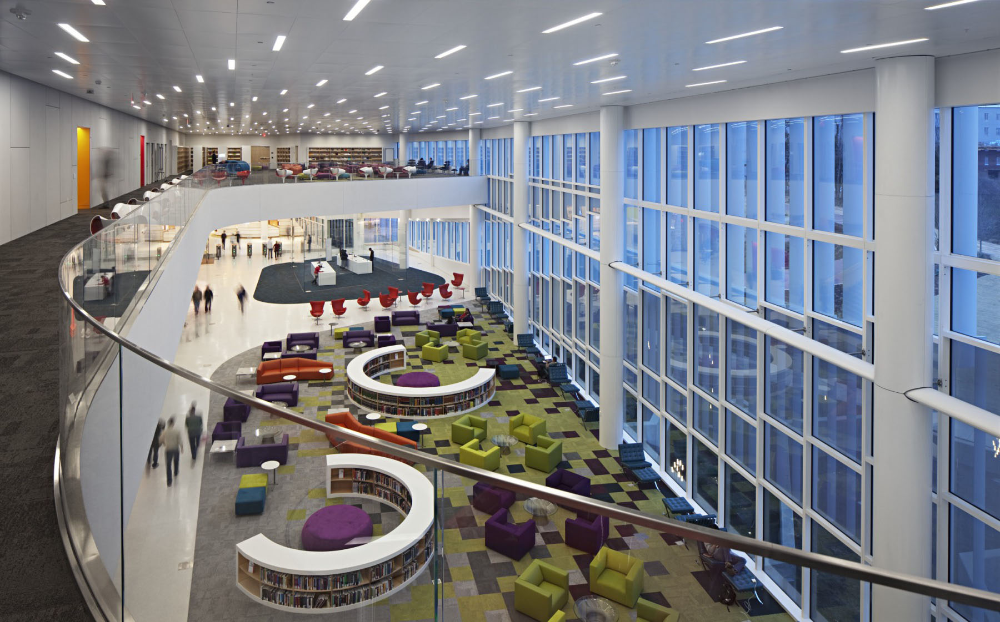
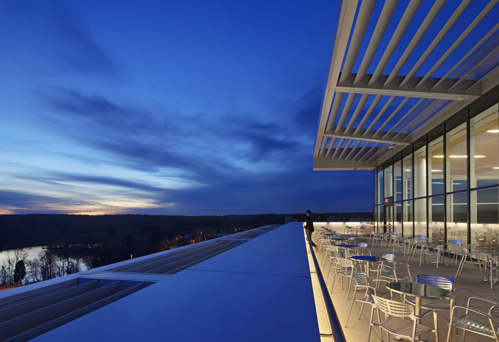
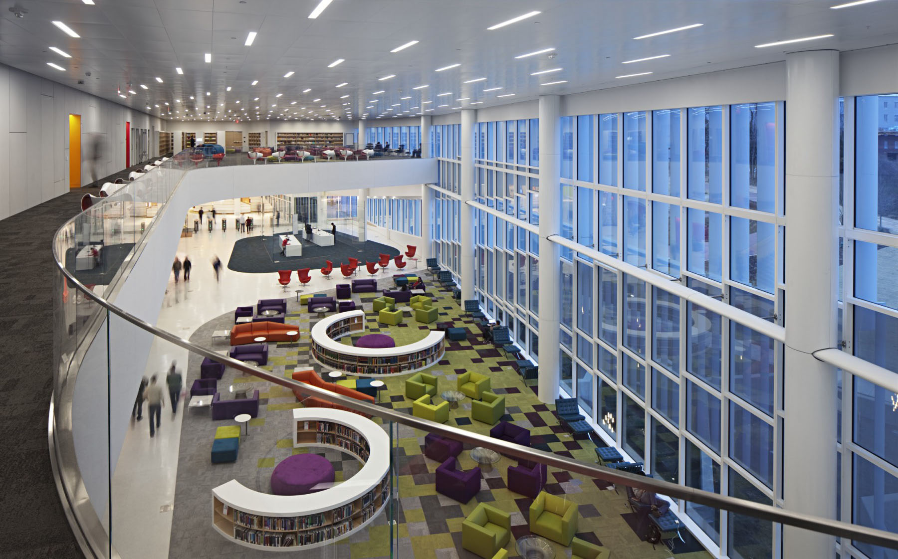
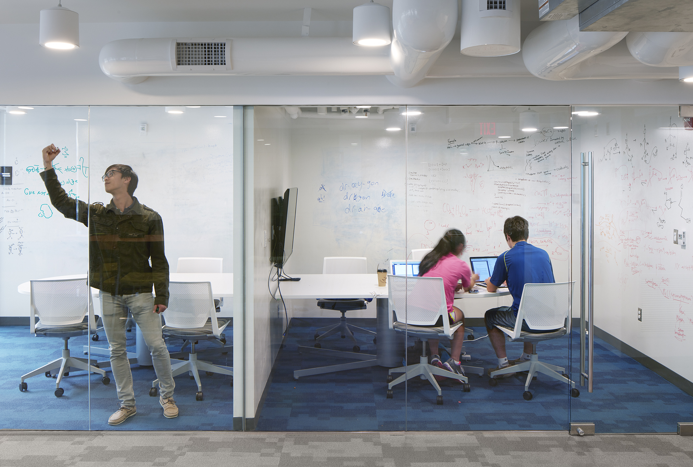
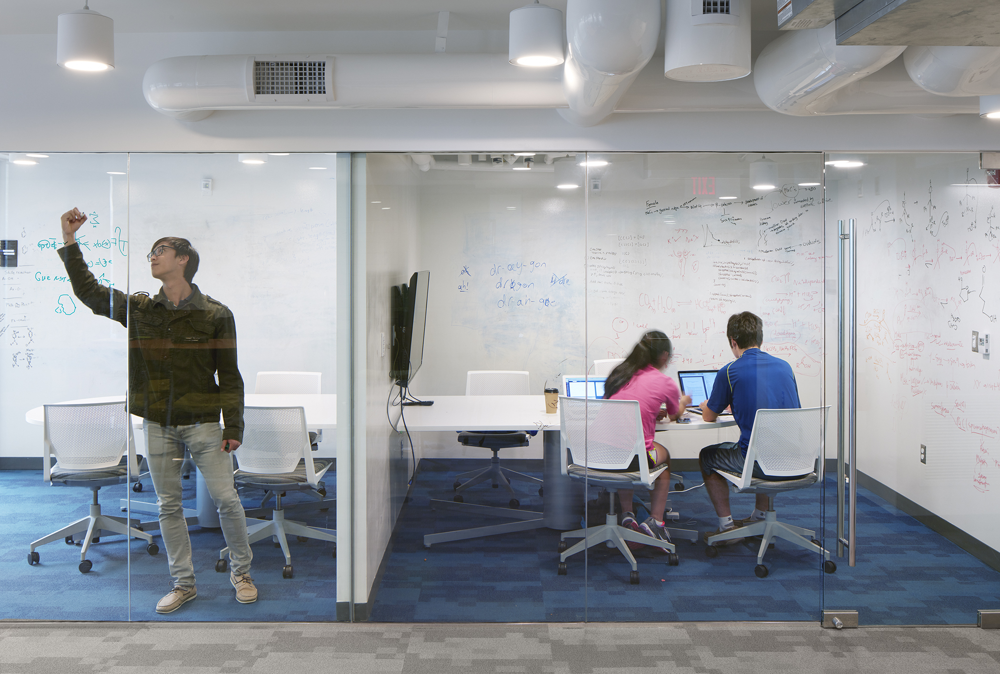

ARCHITECTURE
Wake Tech
Parking Deck 2
2008-2009
2019 AIA South Atlantic Region Honor Award
2019 AIA Virginia Merit Award
2018 AIA North Carolina Honor Award
2020 AIA Triangle Merit Award
850 space Parking Deck
Architect | Facade Detailing, Grasshopper Scripting, Revit Architecture Lead
The Wake Tech campus is split by a natural wetland and forest. The site for the deck is located directly on one edge of the forest. All students commute to campus, requiring ample parking. Thus the need for a deck that is proportionally long and used frequently. To break up the monotony of the long edge, a parametrically generated stainless steel facade was designed. The panels respond to the street edge by being closely spaced, and the wetland edge by opening up as they turn the corner. Both sides of the deck are visible to students, one side is visible from the street, and the other from a pedestrian bridge that moves across the wetlands and connects to the main library of the campus.
Photos © Mark Herboth Photography LLC. Used with permission.Video © Ryan Johnson.


NC State
James B Hunt Jr Library
2009-2012
230,000 sqft Engineering Library
Intern Architect
This library was originally conceived to put NC State University on the national stage. It has won over 20 design awards and been featured in multiple publications. The building is such a success that the library has full time staff devoted to giving tours of the building. My firm worked with the lead design architect Snohetta. I was heavily involved in this project beginning with Schematic Design. As BIM Coordinator I was responsible ensuring the Revit model was working properly. I was also responsible for a large part of the documentation alongside the team. My role continued into Construction Administration as I was responsible for reviewing RFI's, Site visits, and ASI's. During CA, I created a database that tracked all the CA Documents. The database was such a success that it was deployed firm-wide for all projects in CA.
Photos © Mark Herboth Photography LLC. Used with permission.Video © Ryan Johnson.


 



NC State
Fitts-Woolard Hall
2016-2021
2021 AIA South Atlantic Interior Merit Award
2021 SEA NC Excellence in Structural Engineering Award
220,000 sqft Lab+Classroom Building
Architect | Grasshopper Scripting, Revit Architecture Lead
This complex project is the new home for the dean of the college of engineering, the civil engineering department, and the structural engineering department. It consists of research labs, teaching labs, classrooms and offices. I was involved from the programming phase where I created a database for tracking and validating the programming requirements over the course of the design. During the design phase I used computational design to calculate daylighting, energy usage, dynamic window layout, and a wood feature wall. The feature wall is the focal point of the interior that draws people up the building from the entries and draws light down from skylights above. Using computational design, the DNA of both departments was infused to create a series of 50 unique 4 sided faceted panels that are arranged into large repeating triangles. Since computational design was used, each panel was repeated up to 8 times each allowing for design intent and budget constraints to be met. The resulting design was sent digitally as a series of coordinate points to the fabricator to be digitally fabricated.
Photos © Ryan Johnson, Mark Herboth Photography LLC and Jordan Gray.Used with permission.Video © Ryan Johnson.


Duke University
Edens Quad Dorm Renovation
2014-2015
2021 AIA South Atlantic Merit Award
2020 AIA Triangle Honor Award
2017 AIA NC Honor Award
154,000 sqft Dorm Renovation
Architect
Duke University needed to increase the desirability of the Edens Quad dorms. Students simply didn't want to stay in the closed off, Brutalist quad that turned its back on the rest of campus. The University also wanted the dorms to feel more open, inviting and connected to the rest of the campus. The big idea we had was to collect all the small shared commons spaces that were spread throughout the dorms and gather them into one place (replacing the existing spaces with dorm rooms). The final idea included slicing a hole through one of the buildings to act as the gateway to the quad, making it more inviting. This gateway houses the new study commons and gaming room. Other parts of the renovation included reworking the outdoor spaces to be more inviting and usable, renovation of each dorm's commons rooms by removing the solid concrete panels and replacing them with glass, as well as the addition of amenities such as a Gym.
Photos © Mark Herboth Photography LLC and Jordan Gray.Used with permission. 


State of North Carolina
Green Square Parking Deck
2010-2011
782 space Parking Deck
Intern Architect
The Green Square parking deck is located in Downtown Raleigh. It is part of the Green square complex which is a series of Museums, research labs and offices for the state of North Carolina. This project features many sustainable elements including a Cistern featured prominently on the corner, LED lighting, and the entire roof is covered with PV panels.
Photos © Mark Herboth Photography LLC. Used with permission.